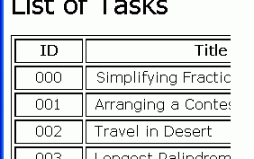
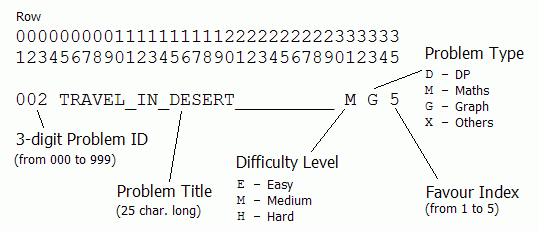

|
Problem B: Arranging a Contest |

Today is 29 November, 2007.
A month later, we will have our traditional Contest of Newbies 2007, so it is time for the Newbie Problemsetters (NPS) to come up with the programming tasks. This year, due to heavy schoolwork, NPS fail to write six brand-new tasks for the contest. Luckily, they have a question bank with many good programming tasks. NPS just have to pick six of the tasks out from there. The question is: which six?
A newbies contest should be easy enough so that even a beginner is able to solve a couple of tasks for rewarding sake. At the same time, there should be some harder ones to satisfy the needs of other more experienced contestants. To make the contest more interesting, the tasks should be of various types.
For each problem in the question bank, NPS have assigned a "difficulty level" and a "favour index". The problems are of course on different topics, including dynamic programming (DP), simple mathematics, graph theory etc. NPS would like to choose the tasks such that:
There are exactly 2 easy tasks and exactly 2 hard ones; and There are at least 2 DP tasks, at least 1 graph problem, and at least 1 about maths; and The total "favour indices" is then to be maximized.
Can you write a program to help them?
The input file consists of several test cases. The first line of each case contains an integer N (6 ≤ N ≤ 200), the number of tasks in the question bank. Then there are N lines, each corresponding to one task in the question bank. See figure below:

The input file is terminated by a line with only the number 0.
For each case, if it is not possible to satisfy the requirements, print "No solution." (without the quotes). Otherwise, print the ID's of the six problems that NPS should choose. If there are more than one solutions, print the lexicographically smallest one (i.e. treat the output line as a string and consider its ASCII value).
7 000 SIMPLIFYING_FRACTIONS____ M M 2 001 ARRANGING_A_CONTEST______ E X 1 002 TRAVEL_IN_DESERT_________ M G 5 003 LONGEST_PALINDROME_______ E D 4 004 HEADMASTER'S_HEADACHE____ H D 4 005 ANDY'S_FIRST_DICTIONARY__ E X 4 006 POWER_OF_MATRIX__________ H M 3 0
000 002 003 004 005 006